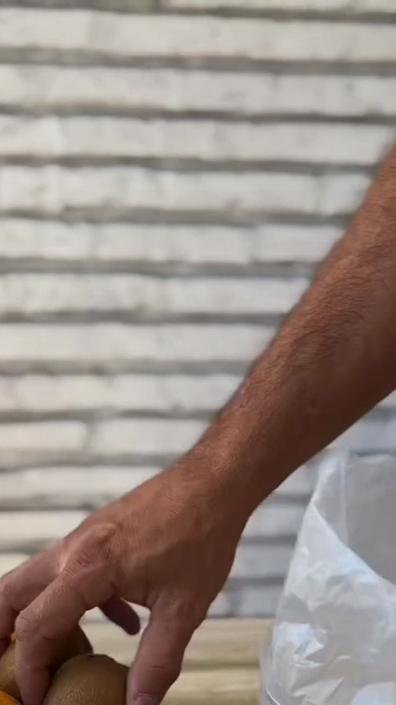
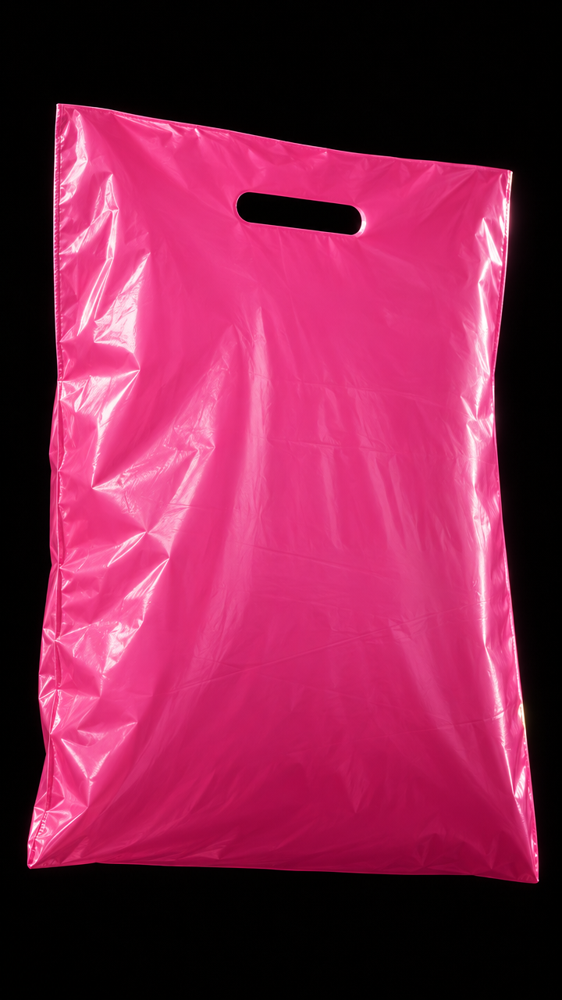

¿Quién se quedaría mirando una bolsa?
 POLINEA
POLINEA
No cambiamos lo que fabrican.
Cambiamos la forma de mostrarlo.
Pero hay algo que quizás no notaste…
Cada pocos segundos,
una razón para seguir mirando.
una razón para seguir mirando.
00:34
mirando una bolsa
Y seguís acá.

REDES
NO EMPEZAMOS DE CERO.
00:00mirando una bolsa